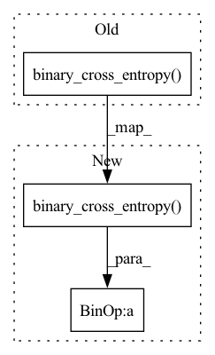

Pattern ID :39692
Before Change
def _forward(self, prediction: Tensor, target: Tensor) -> Tensor:
return torch.nn.functional.binary_cross_entropy(
prediction.float(), target.float(), reduction="none"
)
class LogCMK(torch.autograd.Function):
MIT LicenseAfter Change
self, prediction: Tensor, target: Tensor, weights: Tensor
) -> Tensor:
return (
torch.nn.functional.binary_cross_entropy(
prediction.float(), target.float(), reduction="none"
)
* weights
)
In pattern: SUPERPATTERN
Frequency: 4
Non-data size: 3
Instances Fragment ID: 112813417
Project Name: graphnet-team/graphnet
Commit Name: 59aaff4ad8511523cb530e365b217f4a85207143
Time: 2022-07-15
Author: rahn@outlook.dk
File Name: src/graphnet/components/loss_functions.py
M Class Name: BinaryCrossEntropyLoss
N Class Name: BinaryCrossEntropyLoss
M Method Name: _forward(4)
N Method Name: _forward(3)
M Parent Class: LossFunction
N Parent Class: LossFunction
M File Name: src/graphnet/components/loss_functions.py
N File Name: src/graphnet/components/loss_functions.py
M Start Line: 90
M End Line: 92
N Start Line: 95
N End Line: 102
Before Change
def bound(rce, x, kld, beta):
return F.binary_cross_entropy( rce, x.view(-1, img_dim ** 2), reduction="sum") + beta * kld
class BinaryTransform():
After Change
def bound(rce, x, p_z_, q0_z_0, log_det, beta):
return F.binary_cross_entropy( rce, x.view(-1, img_dim ** 2), reduction="sum") + q0_z_0 - beta * p_z_ - log_det
class BinaryTransform():
Fragment ID: 112813423
Project Name: vincentstimper/normalizing-flows
Commit Name: bd001374eacad94bdea4150d2bfd1876d35d7523
Time: 2020-03-08
Author: 43236963+lukasryll@users.noreply.github.com
File Name: normflow/inf_network.py
M Class Name: AnonimousClass
N Class Name: AnonimousClass
M Method Name: bound(6)
N Method Name: bound(4)
M Parent Class:
N Parent Class:
M File Name: normflow/inf_network.py
N File Name: normflow/inf_network.py
M Start Line: 96
M End Line: 96
N Start Line: 98
N End Line: 99
Before Change
// Binary logistic regression
discriminator_optimiser.zero_grad(set_to_none=True)
expert_loss = F.binary_cross_entropy( D_expert, torch.ones_like(D_expert)) // Loss on "real" (expert) data
autograd.backward(expert_loss, create_graph=True)
r1_reg = 0
for param in discriminator.parameters():
After Change
// Binary logistic regression
discriminator_optimiser.zero_grad(set_to_none=True)
expert_loss = (pos_class_prior if algorithm == "PUGAIL" else 1) * F.binary_cross_entropy( D_expert, torch.ones_like(D_expert)) // Loss on "real" (expert) data
autograd.backward(expert_loss, create_graph=True)
r1_reg = 0
for param in discriminator.parameters():
Fragment ID: 112813424
Project Name: kaixhin/imitation-learning
Commit Name: 806c2e7319893bc1c3615dd970aa8c9632d53f5e
Time: 2021-03-26
Author: design@kaixhin.com
File Name: training.py
M Class Name: AnonimousClass
N Class Name: AnonimousClass
M Method Name: adversarial_imitation_update(11)
N Method Name: adversarial_imitation_update(9)
M Parent Class:
N Parent Class:
M File Name: training.py
N File Name: training.py
M Start Line: 129
M End Line: 134
N Start Line: 106
N End Line: 138